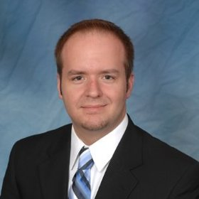

Meet the Team
Nick Fagan
Currently a 5th year Aerospace Engineering Student at the University of Cincinnati and will graduate with his Bachelors in May 2016. He has worked with Schindler Elevator and Federal Equipment Company holding roles in Mechanical Design, Project Management, and Manufacturing. He is currently the President of the University of Cincinnati Rocketry Club and has been a member since 2011. He participated in Space Grant Midwest High-Power Rocketry Competition in 2013 and was Rover Team Lead for the first place 2015 Battle of the Rockets team. He has experience in Autodesk Inventor, AutoCAD, Matlab, Simulink, and LabView.

Aaron Deutsch
Currently he is a 5th year Aerospace Engineering Student at the University of Cincinnati. His expected graduation is in spring 2016. For his previous work experience, he has worked for 5 semesters at Duke Energy. The first being the Steam Turbine Subject Matter Expert, the second being the High Energy Piping Subject Matter Expert, and the third being part of the Metrics and Measures group, and the fourth and fifth being part of the Outage Projects Support group. Some skills of his that are applicable to the team are project management experience, experience building quadcopters, programming experience, safety experience from working at a power plant, and financial analysis experience.

Kevin Eliason
Currently a 5th year Aerospace Engineering student looking to get his Bachelor of Applied Science degree in the summer of 2016. He has been the Vice President of the UC Rocketry Club since 2014 and has been a member of the club since 2011. Since then, he has competed in the Space Grant Midwest High-Power Rocketry Competition in 2013 and was the Team Lead for the first place team at the Battle of the Rockets competition in 2015. His past experience includes: intern at NASA Glenn Research center, research assistant at the University of Cincinnati Combustion Lab, two semesters as a systems engineering co-op with Rockwell Collins Inc., and one semester with Sierra Nevada as a software engineering co-op. He has experience with Matlab and Simulink, SolidEdge, Autodesk Inventor, Satellite Toolkit and various programming languages. After college, he plans to pursue a career in Space Systems Engineering and hopes to develop the next generation of spacecraft.

Gabriel Puente-Lay
Currently a 5th year aerospace student at the University of Cincinnati. Gabriel will graduate May 2016 with a Bachelors in Aerospace Engineering. He has work experience with the companies Wright Brothers Global Gas and Allegion Steelcraft. Gabriel has worked with telemetry systems and lean manufacturing engineering. He has experience with AutoCAD, Matlab, Solidworks and 5s training.

Brandon Horne
Currently a 5th year Aerospace Engineering Student at the University of Cincinnati. Brandon will graduate in May 2016 with a Bachelor of Science degree in Aerospace Engineering. Brandon has 3 years (5 semesters) of experience working at ThyssenKrupp Bilstein, with experience ranging from machining to LEAN manufacturing and process flow. Brandon also has experience in Autodesk Inventor, AutoCAD Lt, Solid Edge, Java, MATLAB, Simulink, Lab View, Objective C, as well as training to operate a manual lathe, and Bridgeport style mill. Brandon has participated in the Battle of the Rockets planetary rover event 2015 in Culpepper Virginia. He performed mechanical design and fabrication on the teams’ Autonomous rover that won the national event.
Cameron Crippa
Currently a 5th year aerospace student at the University of Cincinnati. He will graduate May 2016 with a Bachelors in Aerospace Engineering. Cameron has a year of work experience with the University of Cincinnati's Acoustics Linear Research Lab and six months of experience with GoHypersonic Inc. He worked with data acquisition in both positions. Cameron has experience with LabVIEW, SolidWorks, AutoCAD, MATLAB, and C++.

Jacob Chesley
Jacob is pursuing a Bachelor of Science in Computer Science at the University of Cincinnati, College of Engineering and Applied Science and expecting to graduate in spring of 2016. He has five semesters of co-op experience as a software developer at International TechneGroup Incorporated in Milford Ohio. At ITI, Jacob developed third party software that integrated various PLM and ERP software. He has experience in many programming languages, including C, C++, C#, Java, Python, Ruby, PHP and JavaScript. He also has experience in front end web development using HTML and CSS. Jacob will be the electronics and software leader for this project, and the website developer. He has experience with Arduino and electronics that he developed for past UC Rocketry projects. These projects include designing an electronic control system for air brakes and the electronics and software for an autonomous ground rover.
Caleb Wasmund
Currently a 5th Aerospace student. Caleb plans to graduate May 2016 with a Bachelors in Aerospace Engineering. He has have five rotations of work experience in two large industries such as GE Aviation and ThyssenKrupp Bilstein. Caleb held roles in Product Engineering, Process Engineering, Engine Dynamics, and Support Equipment. He has experience in Matlab, Solidworks, AutoCAD, shop floors, and shop machinery.

Andrew Auffenberg
Andrew is a 5th year Aerospace Engineering student. In high school, he interned at NASA on the OASIS project. In college, Andrew was a co-op at Kowalski Heat Treating as a Lab Technician, as well as at Roush Industries as a NVH Engineer. Andrew has experience with LABVIEW, Solidworks, Photoshop, and VB6. After undergraduate, Andrew plans to get his MBA.
Justin Mulloney
Currently a 5th year Aerospace Engineering student at the University of Cincinnati who will graduate in May of 2016. He has done six semesters of co-op at Barnes Aerospace in Manufacturing and Quality Engineering roles. He has experience in Lean Manufacturing and process capability analysis and is currently getting his Six Sigma Green Belt. Applicable skills that he brings to the team are project management experience, process mapping and flow, and financial analysis experience. After graduation he will be working for the United States Navy as Civil Engineer Corps Officer.

Tim Arnett
Tim is a graduate student working on his M.S. Degree in Dynamics and Controls, with his thesis being on the Verification and Validation of Fuzzy Control Systems. He is the Cofounder and former Vice President of the UC Rocket Club and holds a class 2 HPR certification. Tim participated in the 2012 Space Grant Midwest High-Power Rocketry Competition and was in charge of simulations, systems engineering and post flight analysis. In 2013 he competed in the Battle of The Rockets competition. He was in charge of organizing club activities and launch events. Tim oversaw multiple competition teams as a technical mentor including the 2014 Battle of The Rockets Senior design team.